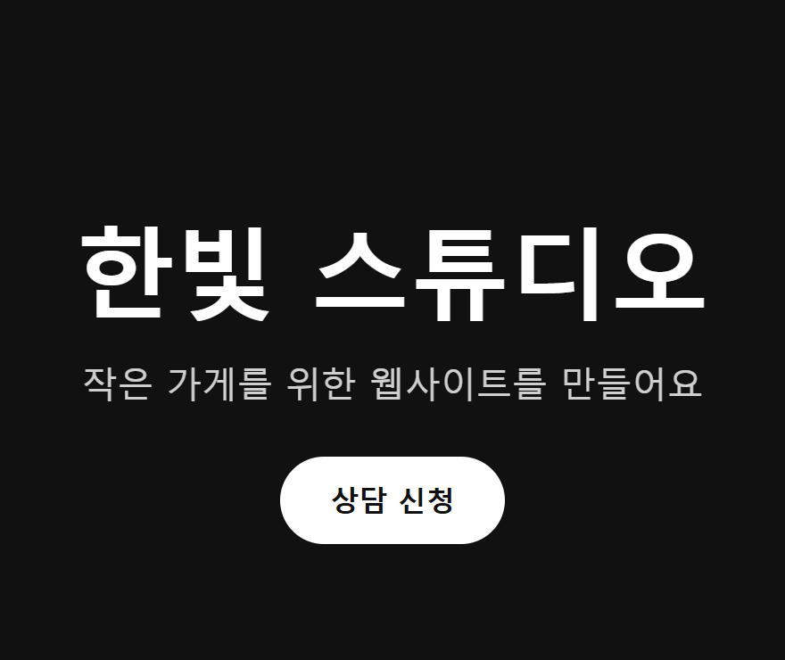
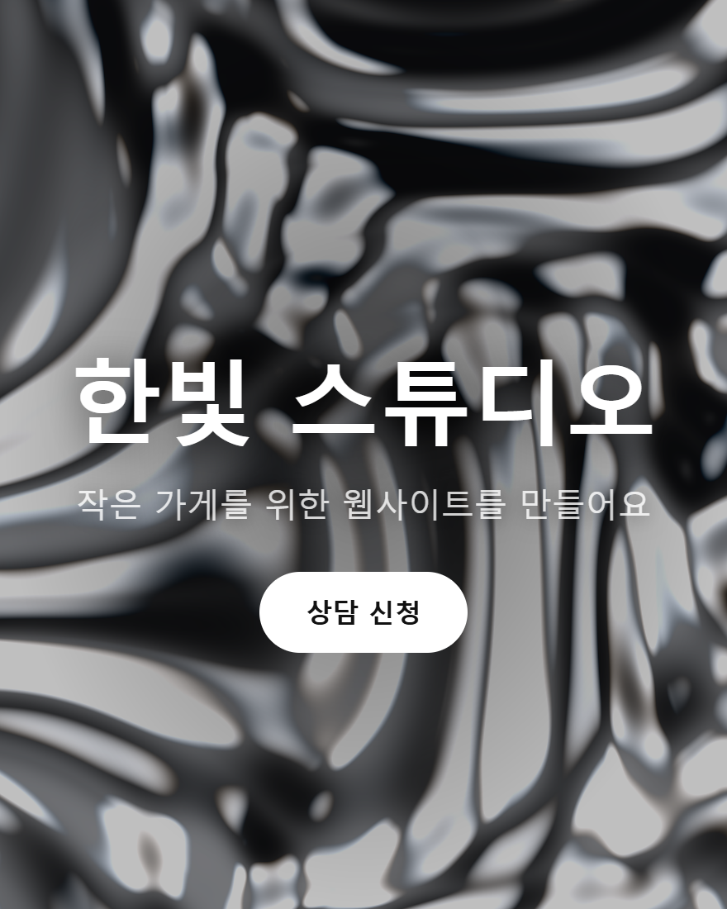

shaders는 유리·금속·물·네온·오로라처럼 움직이는 화면 효과 200개를 웹페이지에 넣게 해 주는 무료 오픈소스(MIT)예요. Claude Code에 스킬을 깔면 "배경에 ○○ 효과 넣어 줘" 한 줄로 AI가 맞는 효과를 찾아 코드까지 넣어 줘요. ※ 스킬 설치와 Claude Code 요청은 저희가 직접 돌려 봤어요. MCP·디자인 에디터·코덱스는 공식 문서 기준이에요.
웹페이지 파일(index.html 등)이 있는 폴더에서 터미널을 열고 '복사해서 쓰기'의 스킬 설치 명령을 실행해요. 폴더 안 .agents/skills/shaders 에 깔리고 Claude Code용 .claude/skills 에도 연결돼요. 스킬은 AI에게 효과 200개 목록과 쌓는 법을 가르쳐 주는 설명서예요.
같은 폴더에서 claude 를 열고, 앞에 /shaders 를 붙여 원하는 효과를 말해요. 저희가 넣은 문장: "/shaders 내 페이지(index.html) 배경에 흐르는 액체 금속 효과 넣어 줘" 도중에 공식 문서 읽기(웹 조회)·명령 실행 허락을 물으면 허락해야 진행돼요 — 저희 첫 시도는 이 허락을 막아 둬서 아무것도 못 고쳤어요.

저희 실행에선 1분 48초 만에, 다시 시키지 않고 한 번에 끝났어요. AI가 한 일: 공식 문서에서 액체 금속(LiquidMetal) 효과를 찾음 → 빌드 도구 없는 HTML이라 인터넷 주소(CDN)로 불러오게 함 → 화면보다 큰 사각형 모양으로 배경 전체를 덮음 → 글자가 묻히지 않게 반투명 막·그림자 → WebGPU가 안 되는 브라우저엔 비슷한 정지 그라데이션. 클로드는 '브라우저에서 열어 보진 않았다'고 했고, 저희가 크롬으로 열어 움직이는 걸 확인했어요.

같은 대화에서 말로 고쳐요. 예: "금색으로 바꿔 줘", "더 천천히 흐르게", "글자가 잘 보이게 배경을 더 어둡게". 저희 결과엔 속도(speed)·물결 크기(ripple)·색(lightColor·darkColor) 값이 코드 안에 적혀 있어서, 숫자만 바꿔도 돼요.
공식 문서 shaders.com/docs/components 에 효과마다 움직이는 미리보기와 설정값이 있어요. 이름을 골라 "배경에 Aurora(오로라) 넣어 줘"처럼 이름으로 시키면 더 정확해요. 98개는 사진·그라데이션 위에 거는 필터(유리 굴절·아스키·디더·VHS 등)라, '내 사진 위에 유리 효과'처럼 무엇 위에 걸지 같이 말해 주세요.
shaders.com 디자인 에디터(무료 계정)에서 효과를 층으로 겹치고 값을 조절한 뒤 'Export Code'를 누르면 내 프레임워크(React·Vue·Svelte·Solid·JavaScript) 코드가 나와요. 그대로 붙여 넣으면 돼요. 저장한 디자인은 CLI(npx shaders install)나 MCP로 내 프로젝트에 넣을 수 있어요.
'복사해서 쓰기'의 MCP 명령을 실행하면 Claude Code·Cursor·Codex 등 내 컴퓨터의 코딩 AI를 찾아 설정해 줘요. 처음 쓸 때 shaders.com 계정으로 로그인(OAuth)해야 해요 — 저희가 로그인 없이 붙여 보니 'Needs authentication'이 떴어요. 무료 계정도 연결은 되고, 내가 에디터에서 만든 셰이더를 찾아·설치·수정할 수 있어요. 완성품 라이브러리는 Pro만이에요.
무료: 효과 200개 코드(MIT) · 스킬 · 완성품 검색(npx shaders search, 로그인 없이) · 디자인 에디터와 코드 내보내기(계정) · MCP 연결(계정, 내 디자인). 유료 Pro(월 10달러, 연 120달러 결제 / 평생 299달러): 완성품 1,000개 이상(매달 추가) · 웹사이트 섹션 55개 이상 · 워터마크 없는 HD 영상·이미지 내보내기 · Framer 플러그인 · 버전 기록 무제한 · CLI·MCP로 완성품 바로 설치. 무료 계정으로 완성품을 설치하려 하면 '워터마크 붙은 미리보기'만 넣을 수 있어요.
쓰기 좋은 때: 내 홈페이지·포트폴리오·랜딩 페이지 첫 화면이 밋밋할 때, 버튼·로고에 움직이는 빛이나 유리 효과를 넣고 싶을 때, 사진 위에 레트로(VHS·아스키) 느낌을 줄 때. 안 맞는 때: 오래된 브라우저 사용자가 많은 사이트(WebGPU가 안 되면 대체 화면), 움직임이 방해되는 글 위주 페이지, 웹페이지 없이 영상만 만들 때(워터마크 없는 영상 내보내기는 Pro).
내 웹페이지 폴더의 터미널에서
npx shaders skill
Claude Code에서
/shaders 내 페이지(index.html) 배경에 흐르는 액체 금속 효과 넣어 줘
Claude Code에서 — 빈칸만 바꿔요
/shaders 내 페이지(○○.html)의 ○○(배경/로고/버튼)에 ○○ 효과 넣어 줘. 글자는 잘 보이게 해 줘
터미널에서 (처음 쓸 때 shaders.com 로그인)
npx shaders@latest install-mcp
터미널에서
claude mcp add --transport http shaders https://shaders.com/mcp
터미널에서 — 설치는 Pro
npx shaders search "liquid chrome background"
도움이 되셨다면
@ai.antenna.kr
에서 바로 쓰는 AI 활용법을 계속 올립니다.